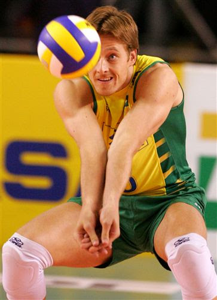
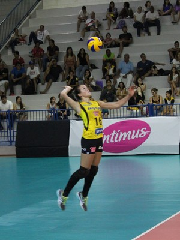
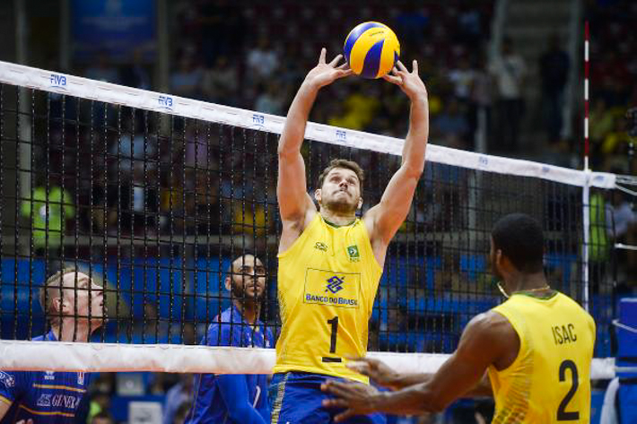
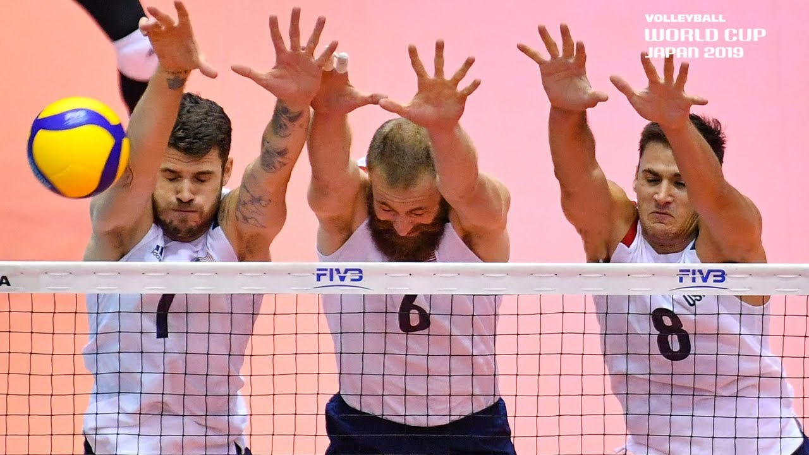
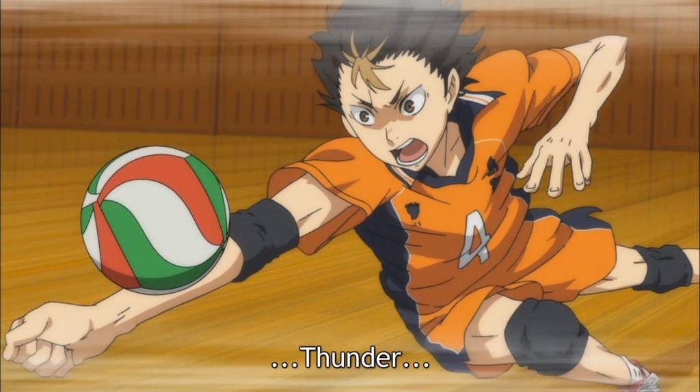

Voleibol
Voleibol (chamado frequentemente no Brasil de Vôlei e em Portugal de Vólei) é um esporte praticado numa quadra dividida em duas partes por uma rede, possuindo duas equipes de seis jogadores em cada lado, este esporte dispõe de importantes fundamentos.
Fundamentos
O Passe trata-se do fundamento mais importante do voleibol, que tem como função ser o primeiro toque na bola.
O saque ou serviço marca o início de uma disputa de pontos no voleibol. Um jogador posta-se atrás da linha de fundo de sua quadra, estende o braço e acerta a bola, de forma a fazê-la atravessar o espaço aéreo acima da rede delimitado pelas antenas e aterrissar na quadra adversária. Seu principal objetivo consiste em dificultar a recepção de seu oponente controlando a aceleração e a trajetória da bola.
O levantamento é normalmente o segundo contato de um time com a bola. Seu principal objetivo consiste em posicioná-la de forma a permitir uma ação ofensiva por parte da equipe, ou seja, um ataque.

O ataque é, em geral, o terceiro contato de um time com a bola. O objetivo deste fundamento é fazer a bola aterrissar na quadra adversária, conquistando deste modo o ponto em disputa. Para realizar o ataque, o jogador dá uma série de passos contados ("passada"), salta e então projeta seu corpo para a frente, transferindo deste modo seu peso para a bola no momento do contato.
O bloqueio refere-se às ações executadas pelos jogadores que ocupam a parte frontal da quadra (posições 2-3-4) e que têm por objetivo impedir ou dificultar o ataque da equipe adversária. Elas consistem, em geral, em estender os braços acima do nível da rede com o propósito de interceptar a trajetória ou diminuir a velocidade de uma bola que foi cortada pelo oponente.
A defesa consiste em um conjunto de técnicas que têm por objetivo evitar que a bola toque a quadra após o ataque adversário.